«Вот тут ещё должны быть буквы и наш лифт сейчас это из старой игры картинка»
«В лифтах кружки должны быть, сейчас не кружки»
«Тут всё оставляем как есть, только нужно не кружки а буковки»
Плашка, колодец, оба зубца и бейдж перемерены по самой вырезке (186x176 px, tools/px.mjs) и нарисованы кодом - размер и место не сдвинулись ни на пиксель. Поменялось только то, что стоит на плашке: спереди буква целиком, за ней вторая - без глаз и рта, как на оригинале задний кот стоит безликой массой, и как на доске очередь не носит букв.
Попап «Отлично», ур. 7
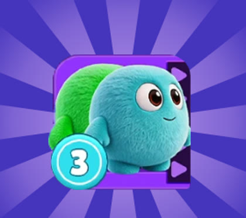
было вырезка из оригинала
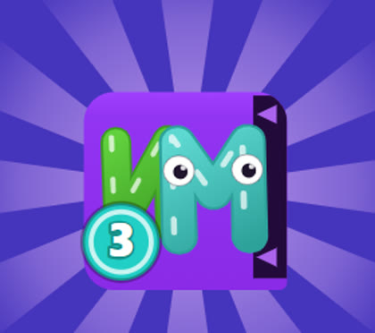
стало та же плашка, буквы вместо шариков
Экран «Новый предмет», после ур. 6
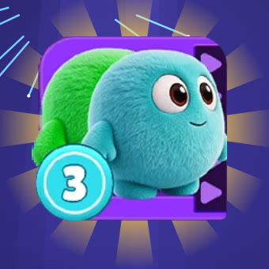
было вырезка из оригинала
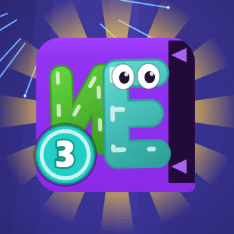
стало та же плашка, буквы вместо шариков
Полоска «Предмет» - 65 px, самый мелкий случай
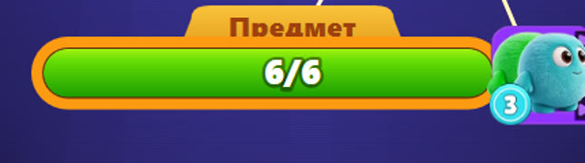
было вырезка из оригинала
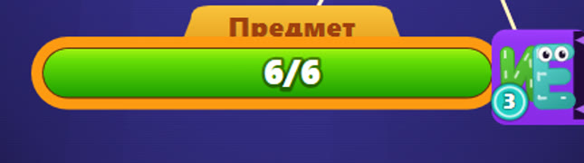
стало та же плашка, буквы вместо шариков
Картинки старой игры в сборке больше нетЭто была последняя. Вырезка удалена из бандла целиком: 331.6 → 313.7 кБ, в гзипе 126.7 → 113.5.
Три экрана меняются разомПолоска «Предмет» на уровнях 1-6, экран «Новый предмет» после шестого и попап «Отлично» на седьмом - это одна и та же функция.
2. Слово и фраза на экране победы
«А давай ещё на этом экране будем показывать собранное слово и фразу. Далее она так и продолжает висеть вместе с лвл комплит. Больше экранного времени ей дадим. И можно сделать крупнее. А анимацию больших букв ОК не надо менять просто они чуть ниже будут и всё»
Слово теперь падает сразу за логотипом и стоит до конца экрана - четыре с лишним секунды вместо 1.3. Анимация пары ОК не тронута: тот же прыжок, та же пауза, то же падение, просто ниже. Заодно у букв слова открылись глаза: закрытые читаются как «уснули», когда строка висит так долго.
1.3 с - фейерверк, пара ОК в кадре
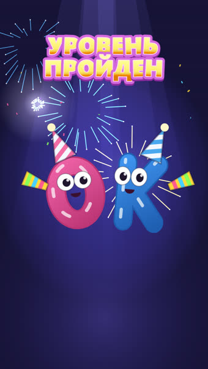
сейчас Как в билде
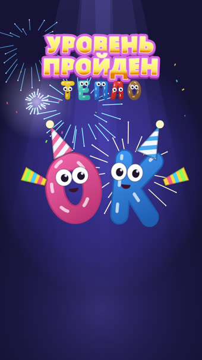
1 Просто раньше
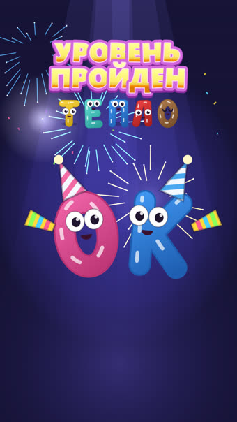
2 Раньше и крупнее
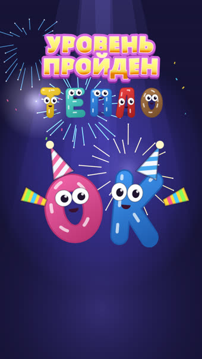
3 Раньше и заметно крупнее
3.6 с - выезжают монетка и полоски
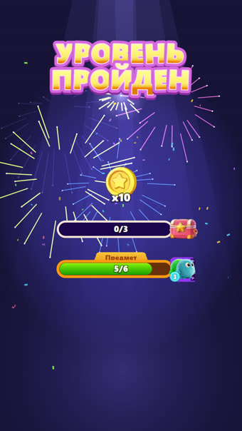
сейчас Как в билде
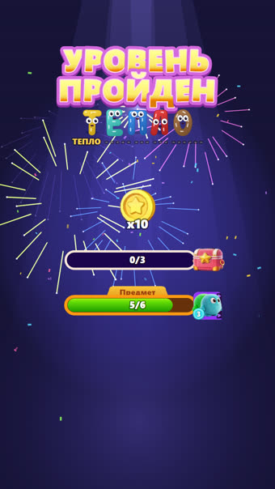
1 Просто раньше
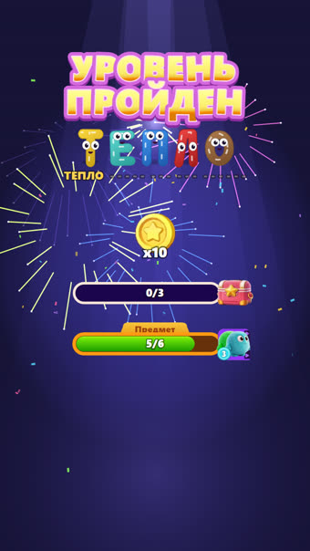
2 Раньше и крупнее
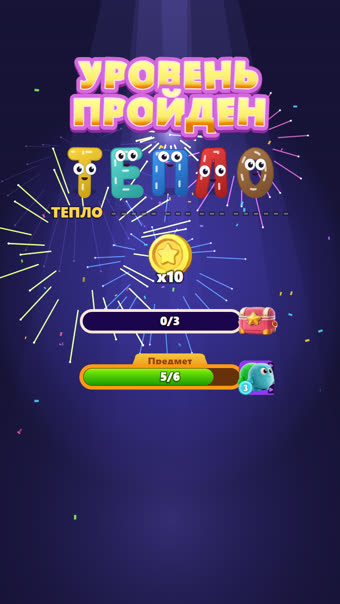
3 Раньше и заметно крупнее
7.2 с - экран собран целиком
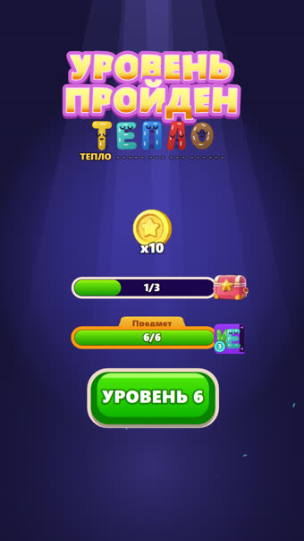
сейчас Как в билде
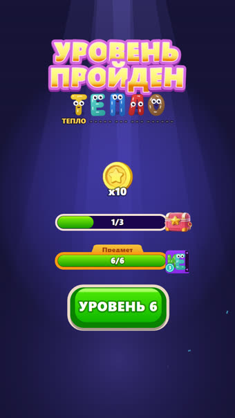
1 Просто раньше
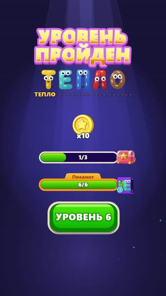
2 Раньше и крупнее
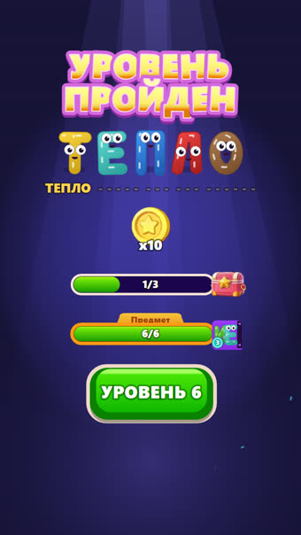
3 Раньше и заметно крупнее
сейчас - Как в билдеСлово приходит на 5.2 с, после обеих полосок. До него верх экрана пустой, и вся сцена длится 6.5 с.
1 - Просто раньшеСлово падает на 0.95 с, сразу за логотипом, и висит до конца. Размер и место прежние, пара не двигается.
2 - Раньше и крупнееБуквы с 27 до 34, фраза с 21 до 26. Пара ОК опускается на 42 px.
3 - Раньше и заметно крупнееБуквы 42, фраза 31. Пара ОК опускается на 74 px. Это верхняя граница - дальше слово упрётся в монетку.
Экран при этом стал короче, а не длиннее: кнопка «Уровень N» возвращается на измеренные 5.2 с, потому что слову больше не нужно ждать своей очереди в конце.
3. Очередь в шахте - точками
«Вот как над Е точки на скрине»
«Можно покрупнее эти точки»
«И за оградку чуть выходить могут»
«А если у нижних букв то снизу лифта, а если у боковых бук то сбоку лифта»
«Аккуратно чтобы было»
Вариант C с раскадровки, перерисованный под эти заметки. Три из пяти - это правила, а не выбор, поэтому они уже сделаны и одинаковы во всех вариантах.
Со стороны, обратной доскеУ верхней шахты точки над буквой, у нижней под ней, у боковой - сбоку. Ряд всегда идёт поперёк шахты и читается по очереди.
Не под бейджемКружок со счётчиком - половина клетки шириной и висит как раз на дальнем углу у трёх шахт из четырёх (это место оригинала, снято с уровня 26). Ряд начинается от дальнего от него угла и обрывается, не доходя: лучше показать две точки, чем четыре, из которых полторы закрыты.
Не больше четырёхВ очереди бывает и десять - на 81 уровне. Точки говорят, что придёт следующим, а сколько всего - говорит бейдж.
Насколько крупные - уровень 8, верхняя шахта
Та самая шахта, на которой всё это и было сказано. Очередь uuou: передняя фиолетовая, за ней фиолетовая, оранжевая и снова фиолетовая. Случай нарочно неудобный - очередь того же цвета, что и буква, а такое в игре сплошь и рядом.
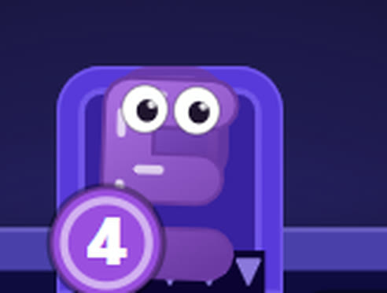
сейчас Как в билде
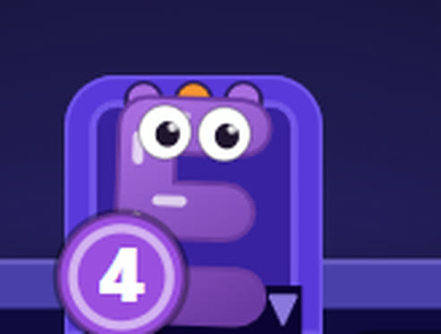
1 Как в раскадровке
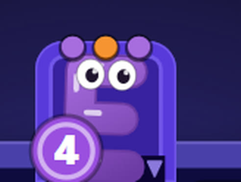
2 На треть крупнее
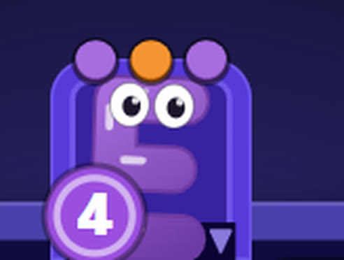
3 На две трети крупнее
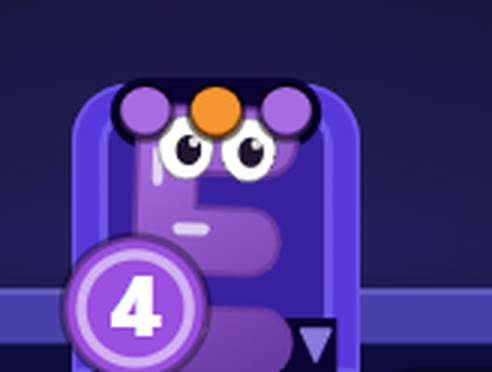
4 На тёмной планке
сейчас - Как в билдеВторая буква стоит за первой, тусклее и мельче, и её режет край шахты. Это и есть «мешанина из буковок».
1 - Как в раскадровкеРовно тот вариант C, что был на странице: точки 29 px при клетке 228, шаг 44, целиком внутри ограды.
2 - На треть крупнееТочка стала больше и села верхом на ограду - её край выходит наружу. Буква сдвинулась к устью, чтобы освободить место.
3 - На две трети крупнееТот же приём до упора: снаружи ограды оказывается большая часть точки. Дальше расти уже некуда - четыре штуки перестают помещаться поперёк клетки.
4 - На тёмной планкеТочки лежат на тёмной планке поперёк головы шахты - как зубчатая кромка лежит поперёк её устья. Единственный вариант, где точку нельзя принять за часть буквы, какими бы ни были два цвета.
Почему «крупнее» и «за оградку» - это один вопрос, а не два: шахта ровно в одну клетку, а буква в ней занимает 0.72 клетки. Внутрь точке расти некуда, поэтому чем она крупнее, тем дальше выходит наружу.
Все четыре стороны - уровень 26
Единственный уровень, где шахты стоят со всех четырёх сторон сразу. Он же был снят с оригинала, чтобы проверить, где там висит бейдж.
Как в билде
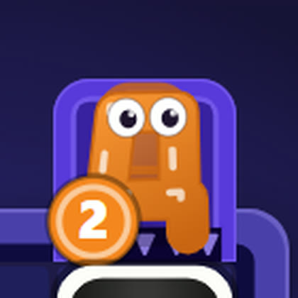
сейчас Сверху
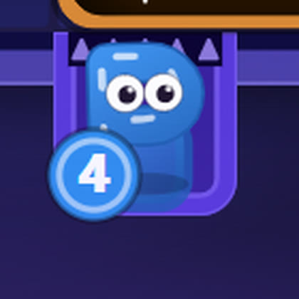
сейчас Снизу
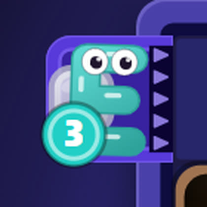
сейчас Слева
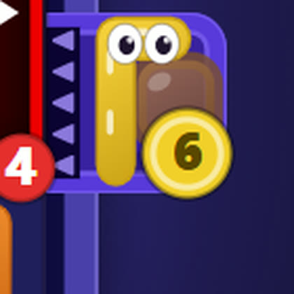
сейчас Справа
Вариант 2 - на треть крупнее
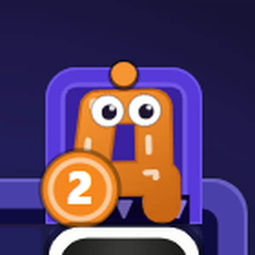
2 Сверху
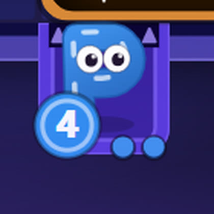
2 Снизу
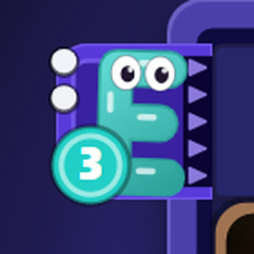
2 Слева
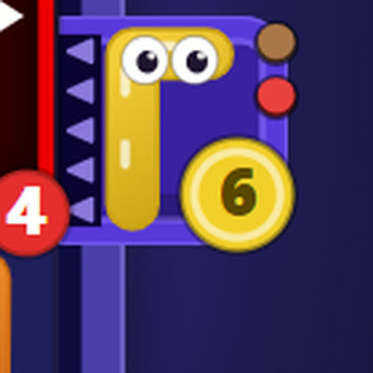
2 Справа
Вариант 3 - на две трети крупнее
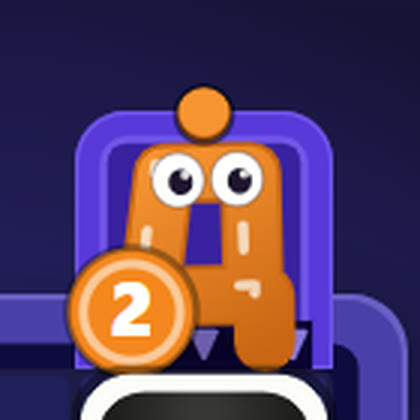
3 Сверху
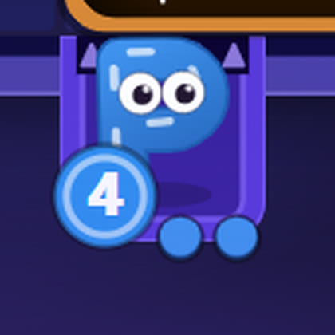
3 Снизу
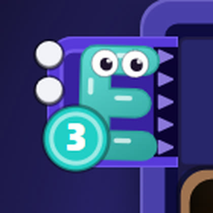
3 Слева
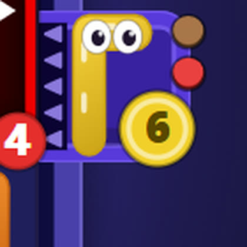
3 Справа
Вариант 4 - на тёмной планке
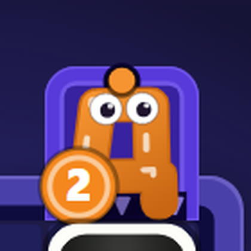
4 Сверху
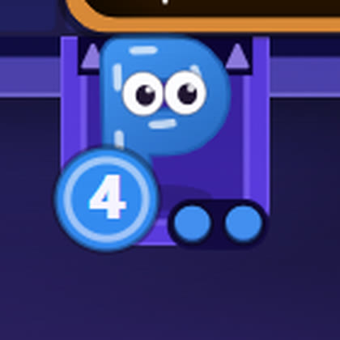
4 Снизу
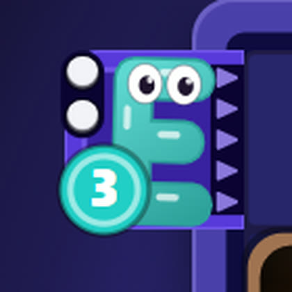
4 Слева
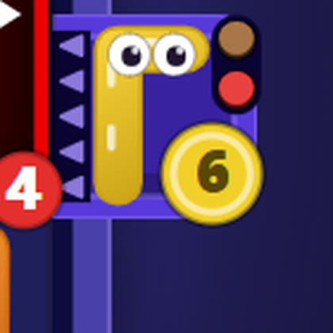
4 Справа
На доске целиком - уровень 8
Четыре шахты, пять букв в очередях. На таком масштабе и видно, читается точка или теряется.
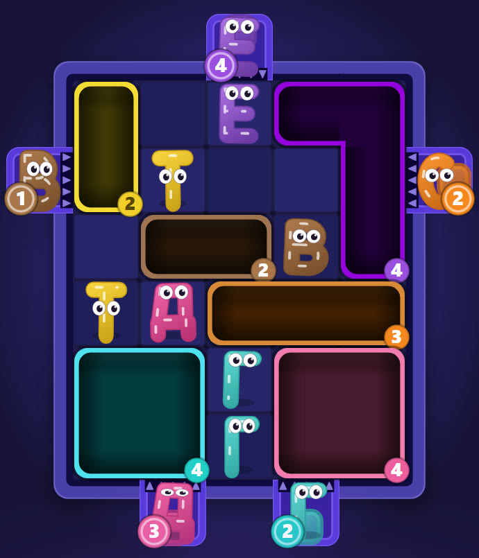
сейчас Как в билде
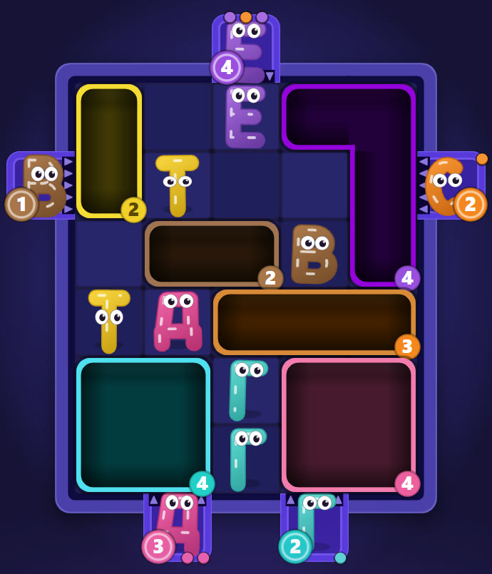
2 На треть крупнее3 На две трети крупнее
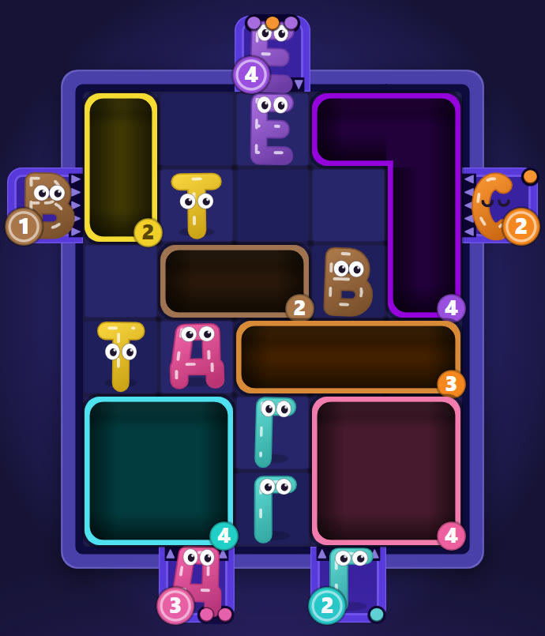
4 На тёмной планке
Крайний случай - уровень 81
Клетка самая мелкая в игре, а в нижней шахте десять букв. Бейдж съедает половину дальнего края, поэтому точек остаётся две - и это правильный ответ, а не потеря.
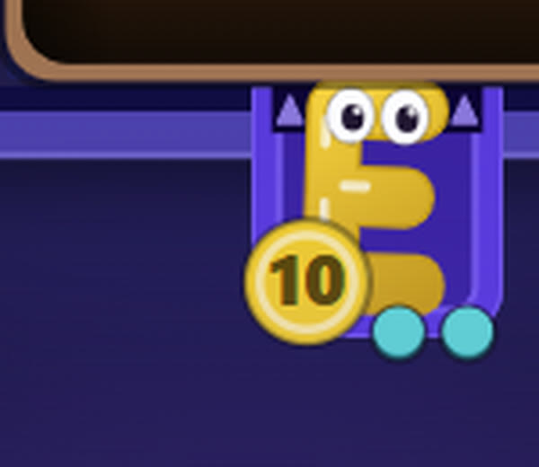
Вариант 3, очередь из десяти
Что здесь видно
Точки мельче, чем на 8 уровне, потому что клетка мельче - они заданы в долях клетки, как и всё остальное в шахте. Бейдж «10» на месте и держит счёт.